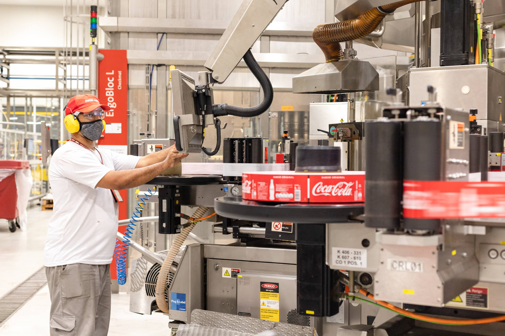

Produção
O refrigerante Coca-Cola normal tem como ingredientes, aromatizantes naturais, água gaseificada, açúcar, cafeína, extrato de Noz de cola, corante caramelo IV, acidulante Ácido Fosfórico. É um produto não alcoólico, sem glúten e não contém quantidades significativas de proteínas, gorduras totais, gorduras saturadas, gorduras trans e fibras alimentares.
A Coca-Cola contém um ingrediente que, em alta dosagem, é potencialmente cancerígeno ao menos em ratos. A empresa informou que solicitou aos fabricantes do corante de caramelo que modificassem o processo de fabricação para evitar problemas um deles seria a obrigação de que suas embalagens viessem com um alerta de risco de câncer. O corante possui sulfito de amônia.
Quem produz a Coca-Cola no Brasil? O Sistema Coca‑Cola Brasil é composto por sete grupos de fabricantes franqueados mais a empresa Verde Campo e a parceria com a Leão Alimentos e Bebidas. Sendo eles: Andina, Bandeirantes, Brasal, Femsa, Solar, Sorocaba e Uberlândia.
Como é o processo de fabricação do refrigerante? O processo básico da produção dos refrigerantes inicia-se no preparo do xarope. O açúcar é dissolvido na água quente tratada. Depois disso, são adicionados conservantes, acidulantes, composto de guaraná e aroma. Com isso, é formado o xarope composto que está pronto para receber o gás.
Qual é a matéria prima principal da Coca-Cola? O refrigerante Coca-Cola normal tem como ingredientes, aromatizantes naturais, água gaseificada, açúcar, cafeína, extrato de Noz de cola, corante caramelo, acidulante e ácido fosfórico.
Processo de produção
